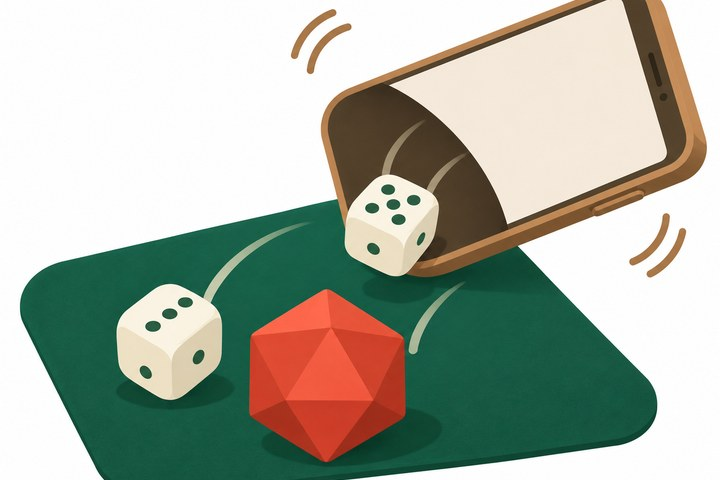

iPhone・iPad・Android のサイコロアプリ
机の上で、
本物のように転がる。
フェルトや木の机の上で、3Dのサイコロが跳ねて、転がって、止まります。すごろくやボードゲームから、TRPG の判定まで。止めたい目は押して鍵をかけ、残りだけ振り直せます。
App Store・Google Play で配信予定買い切りで全部の機能が使えます。登録・アプリ内課金・サブスクリプション・広告はありません。通信もしません。

こんな困りごとのために
サイコロをなくした・忘れた
旅行先のすごろくでも、箱に入っていなかったボードゲームでも、スマホを机に置いて振るだけ。［振る］を押すか、机を2回たたくか、スマホを振ります。
何個かだけ振り直したい
サイコロを押すと鍵がかかり、次は残りだけ振れます。そろえたい目を止めておけます。
1d3 や 1d100 がない
2面（コイン）・3面・4面・6面・8面・10面・12面・20面・100面。「3d6+2」のような式も打つだけで振れます。
何回振ったか分からない
履歴に、時刻・内訳・合計を300回ぶん残します。今日何回振ったかも出ます。
数字ではない目がほしい
面の数（2〜12）を決めて、文字・色・絵文字を入れた自分のサイコロを作れます。はい／いいえ・色のサイコロ・今日のごはん・話題のサイコロの例も入っています。
広告でしらける・音がうるさい
広告はありません。音は木の机・フェルト・カップから選べて、音なしにもできます。転がる長さも選べます。
できること
| 振る | 物理で転がる3Dのサイコロ・［振る］・机を2回たたく・スマホを振る・止まった向きから目を読む |
|---|---|
| 鍵 | 押したサイコロを止めて、残りだけ振り直す |
| 種類 | d2・d3・d4・d6・d8・d10・d12・d20・d100・自作（2〜12面）・8つの色と肌 |
| セット | すごろく・2つ振り・3つ振り・5つ振り・1d100 判定・1d3・1d10・1d20 判定・有利／不利・ダメージ・全部の種類・コイン・自分のセット |
| TRPG | 式で振る（3d6+2・1d100・2d20）・足す数・1d100 判定（成功／クリティカル／ファンブル） |
| そのほか | 履歴300回・今日の回数・机の色・振動・iPad と iPhone Duo の広い画面・日本語と英語・通信しない |
使い方・プライバシーポリシー・利用規約もご覧ください。